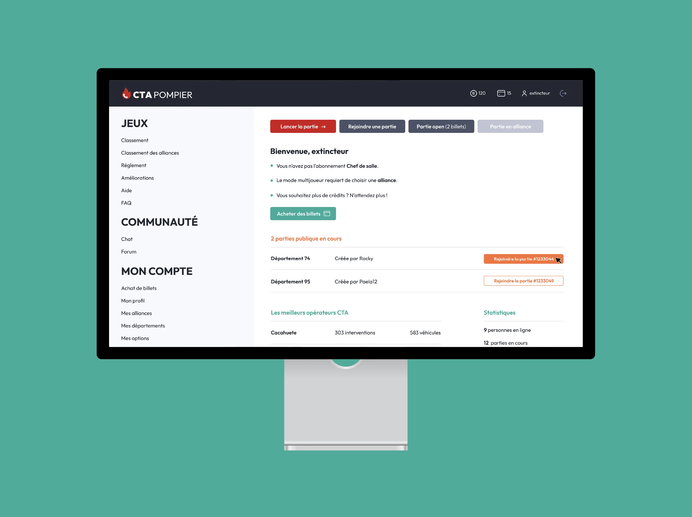
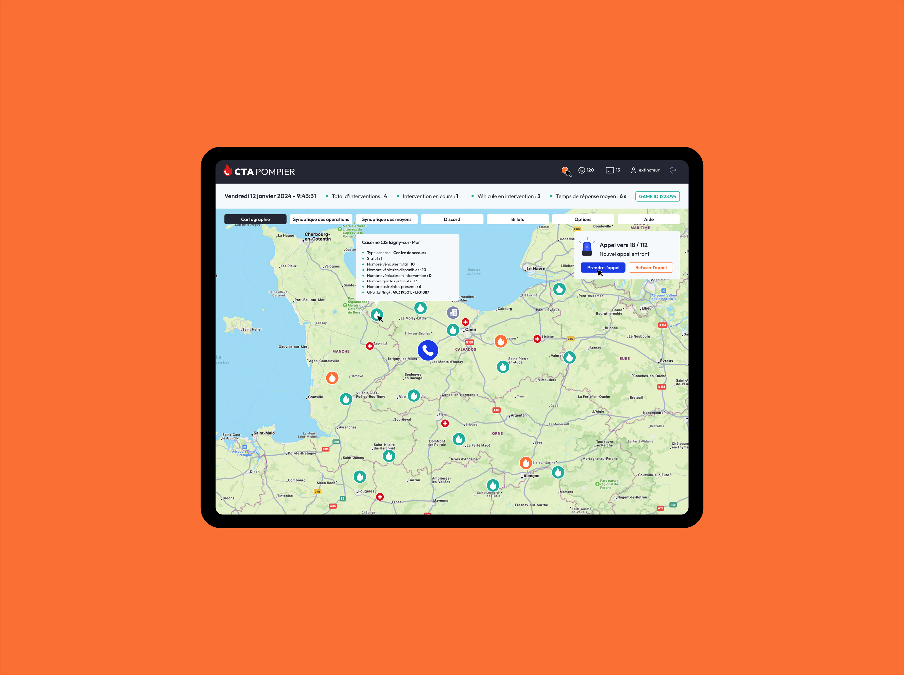
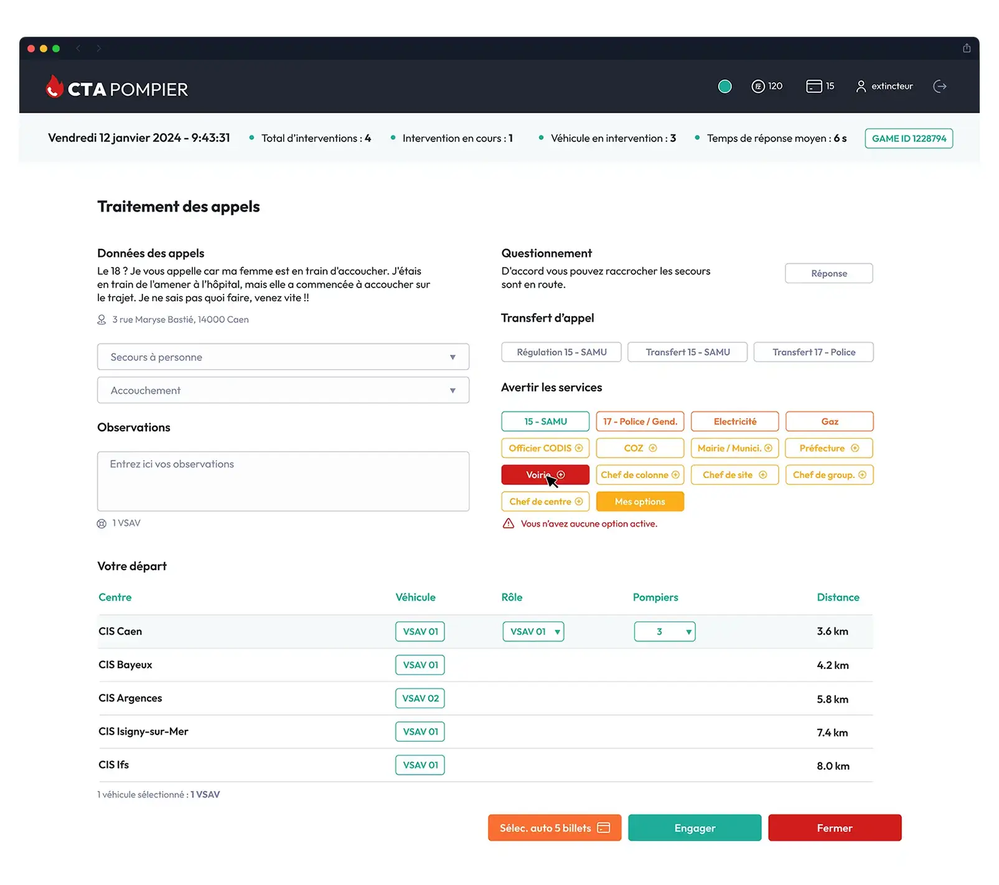
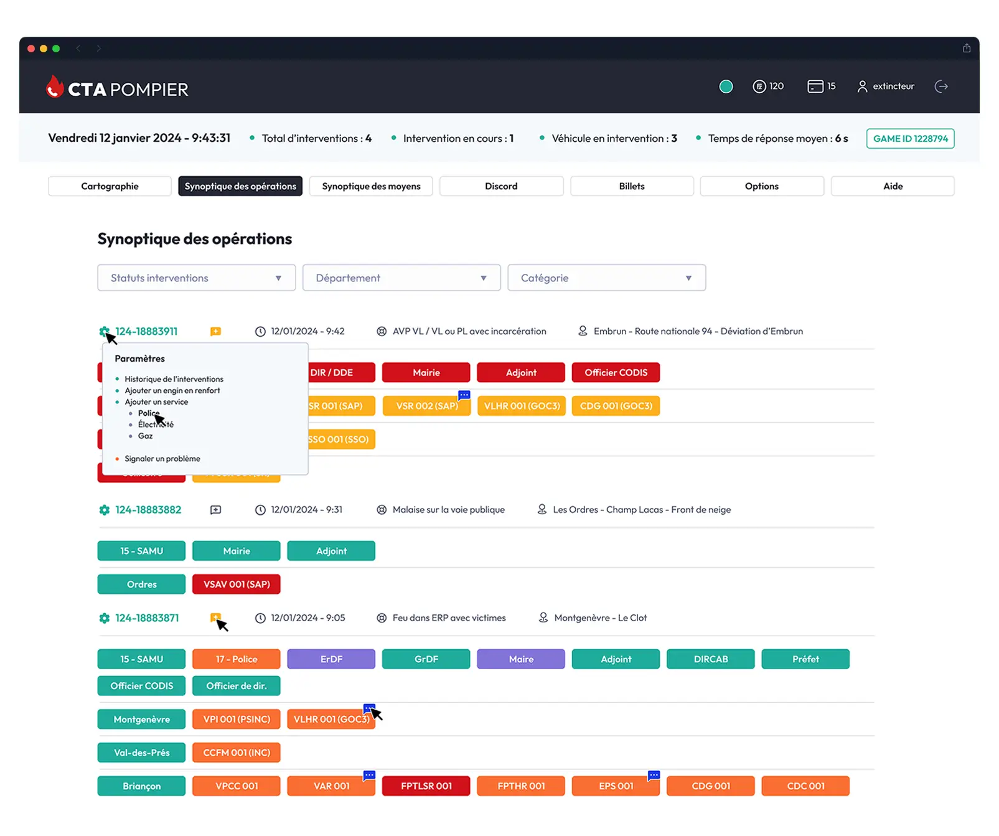
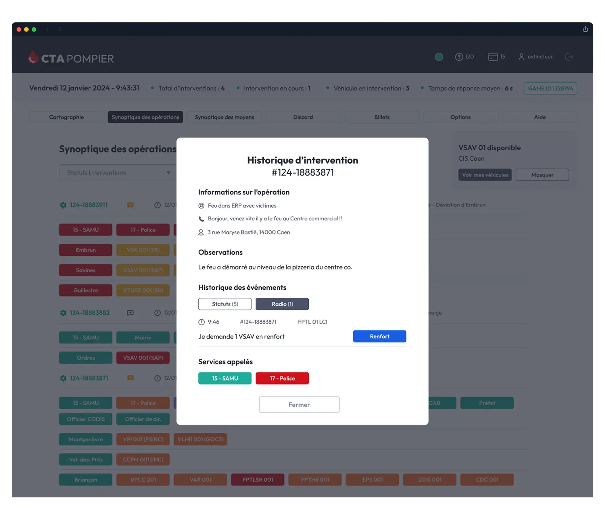

CTA Pompier — Webdesign UI/UX & Simulation d'Urgence
CTA Pompier est un jeu en ligne captivant de simulation d'urgence où les joueurs incarnent des opérateurs de centre de traitement des appels et gèrent les secours sur le terrain. Création du webdesign (sous Figma) du site cta-pompier.com.
Webdesign UI/UX - Interface de jeu
Travail UI/UX sur l'ensemble des pages du site cta-pompier.com. L'objectif était d'offrir une expérience utilisateur fluide et immersive en repensant un design vieillissant, permettant de présenter les fonctionnalités du jeu, les tutoriels et la communauté. Ci-dessous, découvrez quelques captures d'écrans.
Cliquez pour ouvrir le fichier PDF (36 écrans).





Parlons de votre projet